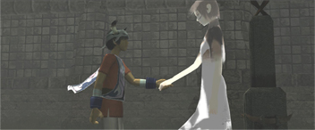

| Developer | Team ICO |
| Designer(s) | Fumito Ueda |
| Kenji Kaido | |
| Composer | Michiru Oshima |
| Platform(s) | Playstation 2 |
| Playstation 3 | |
| Release Date | September 24, 2001 |
| Genre | Action-adventure |
| Rating | ESRB: T |
Ico (イコ Iko, English pronunciation: /ˈiːkoʊ/) is an action-adventure game published by Sony Computer Entertainment and released for the PlayStation 2 video game console. It was designed and directed by Fumito Ueda, who wanted to create a minimalist game around a "boy meets girl" concept. Originally planned for the PlayStation, Ico took approximately four years to develop by Team Ico. The team employed a "subtracting design" approach to reduce elements of gameplay that interfered with the game's setting and story in order to create a high level of immersion.
